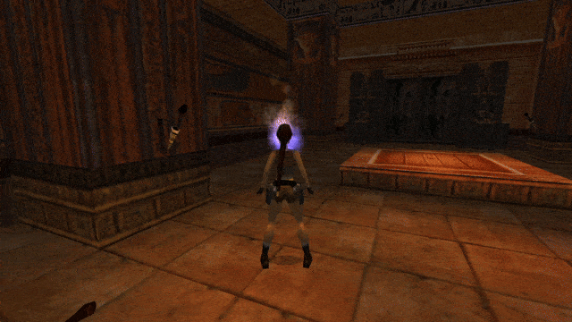

The builder interface revolves around importing modules into level scripts. While as a builder, you do not need to code the modules yourself (it’s the coder’s job), you must understand how the Particle System Plugin manages these modules and level scripts, which implies knowing how they are connected to each other.
Module scripts, as mentioned in the introduction, are Lua script files (text files with the .lua extension). Coders are responsible for writing them and ensuring they work, so the module you receive as a builder should be fully functional, if the coder did a good job. However, once you decide to use some module in your level, you are responsible for the setup needed to get it to work. This includes installing the module in the right place, inside the working directory of your project, importing it into chosen levels and (possibly) performing some customization via the parameter system. If the effect also requires some external assets (e.g. a special mesh or object, a specific sound effect or sprite texture, an additional TRNG script invoked by the module), then as a builder, you need to include these additional assets in your project accordingly.
In this first chapter, I will describe the process of correctly installing modules in your TRLE project folder (with respective differences for whether you have a project managed by TombIDE or done the old-school way), creating a level script and associating it with your level, then importing the modules into said level script.
The plugin’s module system was designed to make particle effect modules highly reusable and shareable among members of the TRLE building community. It also provides the opportunity for builders with no coding skills to still use the modules with relative ease, after learning how to link modules with levels.
That is why the plugin is divided into the builder (level script) interface and coder (module script) interface. The coder’s main workspace is in the module scripting interface, whereas the builder works with the finished modules and imports them via the level script interface. It must be emphasized, however, that the aforementioned level scripts are completely separate from [Level] sections in the scripts.txt file (which determine the order of levels in a level set and optionally host TRNG scripting for a given level). That is the domain of TRLE scripting and TRNG scripting Paolone built on top of it. The plugin uses an entirely separate system, built upon Lua. While being different and requiring separate Lua files, it is pretty simple in the scope needed to import modules (or we hope so, at least)!
The level scripts we are talking about here are their own, individual Lua script files, with the .lua extension. These Lua level scripts are not mandatory for any level, nor are they required by the plugin to function. However, if no Lua level scripts are associated with a level, that level cannot use any special particle effects (which are the whole purpose of having the Particle System plugin in the first place).
Where level scripts should be placed
Level scripts need to be placed in a folder named levelscripts. The case of the letters does not matter, meaning that LevelScripts is also acceptable, but it must be spelled as a single word (e.g. level_scripts or Level Scripts is incorrect and the plugin will NOT be able to recognize the folder). This folder is unlikely to already exist, so it must be created in your TRLE project folder, in a specific location.
Where this location is depends on whether the TRLE project is managed with the TombIDE (TIDE) application from the Tomb Editor suite, or if it’s a project created the classic way, without new tools. I will describe both cases:
TombIDE project – The project folder contains a wrapper executable (e.g. PLAY.exe or some custom name) which shows a splash screen and launches the actual game executable. There is also a child folder present, Engine. Inside of it, you will see asset folders like data (containing the TR4 level files), audio (containing music and ambience tracks), and the actual tomb4.exe game executable. Inside this Engine folder is where you create a new folder and name it levelscripts. Inside of the newly created folder, you will be adding the level script Lua files.
Old-school, NG Center project – The project folder has no Engine subfolder, but directly contains folders like data (containing the TR4 level files), audio, and the tomb4.exe under itself. This is where you must create the correctly named levelscripts folder. The level scripts will go in there.
Any number of Lua level script files (up to a rather high upper limit of 64) can be associated with a level file, through a Customize TRNG script command, with the special CUST_LEVEL_SCRIPTS constant that belongs to the plugin. The exact details of this process will be explained in the Creating a level script section later.
If the Lua level scripts are correctly paired with the level, you will be able to import module scripts inside of them. Importing a module means that the particle effect implemented by the module will be able to appear in the level (although there may be extra prerequisites or assets involved in actually using the effect, for this you must seek instructions given by the module’s author).
For a module to be importable, it must be visible to the Particle System plugin. Modules are visible only if they are installed into a concrete directory inside the TRLE project folder.
Modules, in order to be imported, must be added to a folder named modulescripts or ModuleScripts. The case does not make a difference, either is fine, but the spelling must be exact (e.g. ModuleScript, singular, will NOT work). This folder is also unlikely to be present in the layout of your TRLE project folder, so it must be newly created.
The location is exactly the same as for the levelscripts folder, described above. The folder should be placed alongside data, audio and other asset folders (which in case of a TombIDE project, are contained inside the Engine folder). If this is the case and you see levelscripts, modulescripts, audio, data and the main tomb4.exe all in one place, you’re on the right track.
After the creation of the modulescripts folder in the proper location, you can insert various effect modules into it. Modules have the form of .lua files (or .luac files, more on this later). These contain the Lua code necessary to implement the effect. If you were to open such a file, you would see the code written in plain text, by the coder. But if you are not a coder yourself, you don’t need to know what goes on in there. Rather, you will be concerned with creating level scripts to import these module files and use them in your levels.
A level script is a Lua file – a plain-text file with the .lua extension, located in the levelscripts folder. Such files are linked to a particular level entry with the use of Customize= CUST_LEVEL_SCRIPTS command in TRNG script. By using this script command, you specify to the plugin which level script files to load from the levelscripts folder. This brings up the question – how do we specify these files? Do we do it by file name? Well, yes, but not in a direct way…
Due to limitations of TRNG script syntax, it is not possible to directly type the name of a file in the CUST_LEVEL_SCRIPTS command. Instead, we have to rely on ExtraNG strings in english.txt.
We add the filenames of the level scripts to this ExtraNG string list. For this to work correctly, the name of a level script file must be written in a particular way. You must type the name of the file, but without the .lua extension at the end. To give an example, let’s say that in levelscripts, there is a level script file called temple.lua. We must then add temple as a ExtraNG string entry (without the .lua at the end).
Because of how TRNG manages plugins, the names of any installed plugins are included as ExtraNG string entries. Hence, if you correctly installed this plugin, you are bound to have at least one NG string entry already occupied (or more, if you have more plugins installed or are using ExtraNG strings for other purposes). But it does not matter, we can add new ones easily. The layout of ExtraNG strings (if using TombIDE) can look something like this:
ID
Hex
[ExtraNG]
1
$001
Plugin_ParticleSystem
To this, we can add another entry, by typing in the next free row the name of the level script file, without the extension: temple. We should have something like this:
ID
Hex
[ExtraNG]
1
$001
Plugin_ParticleSystem
2
$002
temple
The temple string was added under ID 2. It’s important to note that no additional characters (not even spaces) can be before or after this name (otherwise the plugin will get confused). After we have added this entry to ExtraNG strings, we can refer to it via its ID number, 2.
You use these IDs within the CUST_LEVEL_SCRIPTS script in a [Level] section (or for the title level, [Title] section), first writing down the Customize= TRNG script command:
Customize= CUST_LEVEL_SCRIPTS,
After the CUST_LEVEL_SCRIPTS constant, you type ID numbers of ExtraNG strings added to english.txt (separated with commas if you have more than one):
Customize= CUST_LEVEL_SCRIPTS, 2 ; load levelscript given by NG string with ID = 2
Numerous IDs can be listed in this command, meaning you can use not just one, but several level scripts per each level (up to a maximum of 64 different NG string IDs). A possible application of several level scripts per level, is to have “global” script files that will be used for all or most of the levels. For example, this could be a file named global.lua (and the NG string global). For each level, you can also have individual level script(s) that will add some effects specifically used in that level.
It’s also possible for no script files to be linked to the level. This is simply done by not adding a CUST_LEVEL_SCRIPTS script in the given [Level] entry. The plugin assumes no special effects will be used for this level in such case.
The level script file is a raw text file. This means the file consists purely of text characters and contains no non-text data. Files with the .txt extension are raw-text files, for instance. If you create and save such a file, you will notice the file retains no extra data regarding formatting of the text (font style, size, color, boldness, italics, etc), leaving just the raw text. This is exactly what we want for .lua files, too!
So, one more question that remains is… how do you make a .lua file? Given that these files must be plain-text, could we just make one in Notepad, the way we make .txt files? Well, as a matter of fact, we can, but it’s an awkward and cumbersome process, as you will see for yourself.
Creating level scripts with Windows Notepad (not recommended)
If you decide on using Windows Notepad, you can create a new text file and save it under the name the level script file should have (e.g. temple.txt). There is one problem that needs addressing – it still has the .txt file extension, but we need a .lua extension. Depending on your system settings, you may not be able to see or edit the extensions of common file types, just their names. If that’s the case, you can change the settings for this in the File Explorer (how exactly depends on the version of Windows OS you are using, unfortunately it isn’t consistent between Win 7, 10 or 11 – all I can say is Google is your friend here). Once all file extensions are visible, it is a matter of changing the three letters txt after the dot to lua. Windows will probably complain now that changing files’ extensions manually can break them. Since both txt and lua are plain text files, in this instance it’s just Windows making a mountain out of a molehill (as it often tends to do…), rest assured nothing bad will happen to the file.
However, if you want to avoid the faff of changing your File Explorer settings and then manually editing the file’s extension, with Windows making an overly dramatic scene about it each time, I can recommend an alternative (and superior) solution. The solution is using a special text editor for such purposes: Notepad++!
Creating level scripts with Notepad++ (recommended)
Notepad++ is a more technical-oriented text editor, ideal for working with various scripts, source code, markup files and similar technical text files. It allows you to save plain text to dozens of extensions directly, including Lua source files (.lua)! On top of that, it’s also very easy to use, similar to Notepad, with non-invasive extra features. It can be downloaded for free from its official website: https://notepad-plus-plus.org/ Notepad++ is better than the regular Notepad for many reasons. Firstly, you can immediately save text to Lua files, without the renaming workaround. Secondly, if the extension is recognized, the text editor displays color-coded syntax specific to the language, which when dealing with source code, greatly improves the readability. Thirdly – you can pick custom themes, dark, bright or anything in between!
The latter two reasons are mainly beneficial to coders, but there is no disputing that the primary reason (saving to .lua without annoying workarounds) is great for everyone.
In Notepad++, to create a level script file, just create a new, empty file and save it in the levelscripts subfolder (where you find the level files themselves). When saving, enter some chosen name for the level script file (here I decided to go with the name of the level file, tut1, but the name can also be something different) AND importantly, the .lua extension after the name! You can also select the Lua source file option from the dropdown, but either way, the filename must explicitly include the extension, otherwise the file will be saved without it (extensionless files are rather uncommon in Windows but are very common in UNIX operating systems, like Linux, hence the saving dialog does not assume an extension, it must be visibly appended to the file name). Double check that the file was correctly saved, with the .lua extension, inside the levelscripts folder (e.g. you should have levelscripts/tut1.lua).
Do not forget to then add a suitable ExtraNG string entry for the file, which in our example should simply be tut1, no extension. Note down whatever ID number is assigned to this string (e.g. ID 5) and then add the following line to the appropriate [Level] entry:
Customize= CUST_LEVEL_SCRIPTS, 5
Of course, you may have additional level scripts, assigned to different ID numbers in ExtraNG strings.
Now that an empty level script file has been created and linked to the TR4 level itself, we are able to import effect modules into it!
By now, you should now have a level script file (such as tut1.lua) in the levelscripts subfolder, the name of this file (minus the extension) added as an ExtraNG string, and the Customize= CUST_LEVEL_SCRIPTS line to go with it in the appropriate [Level] section. We should also have some modules in the modulescripts subfolder, ready to be imported. What’s that? You don’t have any modules yet?! Why didn’t you say so! To get you started with some, you may grab a few example modules from this repository:
On the main page, click on the green Code button, and on the dropdown select the Download ZIP option. Once downloaded, extract the .lua files and place them in the modulescripts folder (described in the earlier section on installing modules).
Let’s say we want to import one of the downloaded modules, firehead.lua. There is a special syntax for this importing, and this is where the minimal amount of Lua scripting comes into play.
In order for the Particle System plugin to import chosen modules, there is a specific instruction for the plugin, called require(). When the plugin loads the level script, it sees this instruction and imports (loads) the module requested in the instruction. In the case of the firehead.lua module, the import instruction you write inside tut1.lua (or whatever your level script happens to be) should look like this:
require('firehead')
Or, alternatively:
require("firehead")
Don’t run away just yet, let me explain what all of this means!
The require instruction signals to the plugin that the level will “require” a certain module. The instruction has the imported module specified inside round parentheses ('firehead'), but you may notice a few quirks:
The name of the module script is written without the .lua extension (just like the level scripts in ExtraNG strings),
The name is placed inside the parentheses next to require and encased in single-quotes, 'like this text here'. Interchangably, you can use double-quotes, "like in this text". Both quote types are acceptable, but they cannot be mis-matched, e.g. "this is not allowed', 'nor is this".
I’ll do my best to explain the reasoning for this peculiar syntax. Regarding the first point, we are not specifying the .lua extension of the file, because module scripts can have two different extensions, .lua or .luac. Their differences will be explained eventually, but the module file’s actual extension is omitted in either case. Just something to keep in mind fpr now, since otherwise the plugin will reject the import instruction.
About the second point, in the Lua programming language, there are some predefined instructions that it can understand, like the require instruction. Anything that Lua does not recognize as an instruction, must still respect Lua’s syntax rules (or else you end up with a syntax error). This is a problem, because modules can have practically any name (that is allowed for files, at least), but Lua will not understand what this filename, in isolation, is supposed to mean. How do we make this distinction between a specific Lua instruction and a random file name? By putting the name inside "quotes" (this tells Lua it is a string, but we will get to that later). In a way, putting the module name in quote characters serves the same purpose as putting the level script name in an ExtraNG string did (quite similarly, TRNG does not understand that a random file name is not a TRNG command, but the ExtraNG string tells it “this is a file name”).
Make note of the fact, that there are no white-space characters before or after the name of the module file, the quote characters are tightly wrapped around the name (without the extension, of course). Such extra characters will confuse the importer and likely cause it to fail.
Once you save the level script with the newly added import instruction, you can go into the game and run the level to which the level script is paired. You should then see the effect of the firehead.lua module (I think the name is quite apt)!

Importing more modules
If you want to import another module from the bunch (e.g. party.lua), you can do it on the next line in the level script:
require('firehead')
require("party")
For the party.lua module I used double-quotes this time ("party"), but as mentioned, it does not make a difference which type of quote character you use, as long as they are not mixed together.
If you save, launch the game and go into the level corresponding to the level script, you should see some colorful, silly particle effects dance around Lara, whose head is on fire thanks to the previous module!
If that’s indeed the case, you have successfully imported both modules! Feel free to import some other modules and play around (note that some have custom parameters, something that’s explained in the upcoming chapter).
The require() instruction is what you will be mostly using as a level builder. You now have 50% of the knowledge necessary to use the plugin, and for simple modules, it’s sufficient. However, coders can also make modules that contain customizable parameters, which need a more indepth explanation (and a bit more insight about Lua). We will elaborate on this topic in the next chapter.
In the meantime, you can take a well-deserved break!